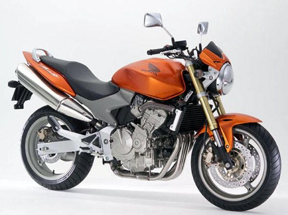
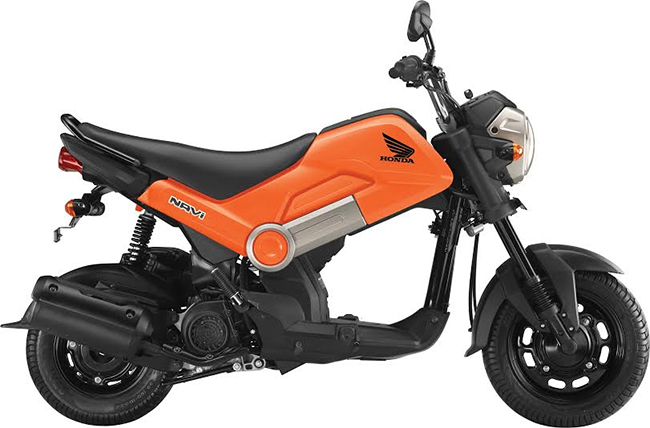
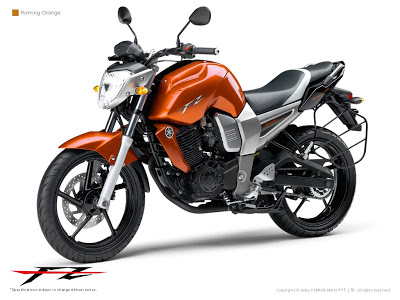
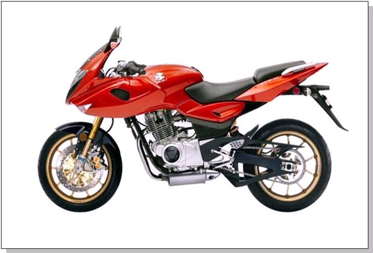

ERRORISTS OTS SOLUTION
Recommendations
Similar Images




Description
The Bajaj Pulsar 180 is Bajaj once again playing the middle game. It tries to offer a balance for people looking for combined traits of a 200 or a 150cc bike. The commuter seating position, and comfortable seat further strengthen the 180’s case. The Bajaj Pulsar 180 also gets a larger disc, and wider rear tires over the 150 to make use of all that power..